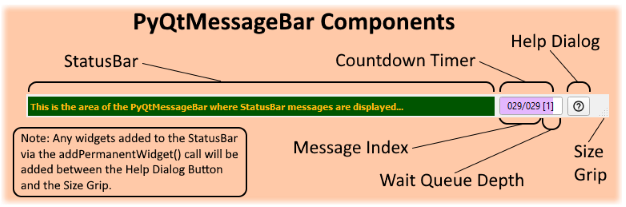
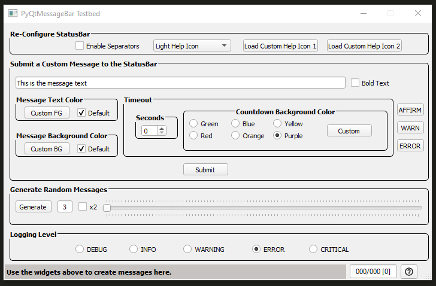

Introduction¶
PyQtMessageBar subclasses the QStatusBar widget to add the following features:

StatusBar message buffering
StatusBar messages can specify a foreground color, a background color, enable bold text, and set a display timeout
Display of a PyQtMessageBar Help Icon which provides access to a PyQtMessageBar Help Dialog
Keyboard activated recall of buffered message via keys Up Arrow, Down Arrow, Page Up, Page Down, Home, and End
Wait queueing of messages that have explicit display timeouts specified (the Timer Wait Queue)
An indicator showing the currently displayed Message Index and Wait Queued Message Count Depth (how many messages or waiting to be displayed)
Countdown timer progressbar display of wait queued messages in the background of the above mentioned indicator
Delete the currently displayed message
Deletion of ENTIRE message buffer
Save ENTIRE message buffer to a file under a directory specified at PyQtMessageBar object intialization
Save ENTIRE message buffer to a file under a user chosen directory (using a File Save As Dialog)
Custom signal that the application can connect a slot method to in order to be informed when the Timer Wait Queue empties
PyQtMessageBar supports the following configurable features:
Color of the countdown timer progressbar
Choice of PyQtMessageBar Help Icon Style – Light Color, Dark Color, or Two-Tone Color
Support of user specified Help Icon
Ability to enable a vertical separator between StatusBar’s permanent widgets that might be added by the user
The Built-in Help Icons: Light, Dark, Two-Tone

Keyboard Input¶
The following key sequences are recognized by an in focus PyQtMessageBar object. See the first note below.
Up Arrow - Display the buffered message before the currently displayed message.
Down Arrow - Display the buffered message after the currently displayed message.
Home - Display the oldest buffered message.
End - Display the most recent buffered message.
PageUp - Page the buffered message displayed up by page size entries.
PageDown - Page the buffered message displayed down by page size entries.
control-alt-X - Delete the currently displayed buffered message.
control-alt-shift-X - Delete all of the buffered messages.
control-alt-S - Save the message buffer to a file in the save_msg_buffer_dir directory.
control-alt-shift-S - Save the message buffer to a file location determined by the user’s use of the displayed File Save As Dialog.
Note
In order for a PyQtMessageBar object to interact with the keyboard it must have its focus properly set. See Class PyQtMessageBar in the API section for a code example of how to setup the keyboard focus for a statusbar.
Note
The page size for PageUp/PageDown is 10 messages.
Testbed¶
The source distribution of PyQtMessageBar contains a testbed.py file in the tests directory that facilitates composing custom message colors and demonstrates how to exercise the PyQtMessageBar API.
The testbed GUI looks like this when first invoked:
The Configure StatusBar group of widgets will instantiate a new statusbar when a widget in that group is used. So these widgets are disabled during any generation of random messages by the Generate Random Messages widget group. After random message generation is complete, the Configure StatusBar group of widgets should be enabled again.
Note
While the random generation of statusbar messages highlights the display of the message index and the timer wait queue countdown progressbar; it does not always generate foreground and background colors that have high enough contrast to be easily readable – eventhough a minimal amount of effort was expended to try and generate constrasting colors.
Further Reading¶
For more internal details see the API section.
For more information on Qt’s QStatusBar read the Qt QStatusBar Docs.
- PyQtMessageBar manifestations on-line are: